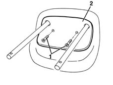
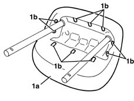
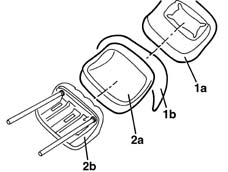

7050B16 rear seat head restraint trim - r r with head restraint removed
- Path
- Procedures > 70 FITTINGS > 7050 REAR SEATS > 7050B rear seat head restraint/arm rest > 7050B16 rear seat head restraint trim - r r with head restraint removed
- Kind
- repair procedure (removal / refitting; the operation number is the code)
- Applies to
- all engines; all production periods
- Interactive page
- https://sloeber94.github.io/elrnDB-lYpsln/en/#/2429663
Applies to: all engines; all production periods
 Removing
Removing
 Refitting
Refitting1. Undo the bolts.
2. Remove the trim.

Applies to: all engines; all production periods
1. Release the cover (1a) from the retainers (1b).

Applies to: all engines; all production periods
1. Remove the cover (1a) and keep the unwoven fabric (TNT) (1b).
2. If necessary, separate the upholstery (2a) from the frame (2b).

Applies to: all engines; all production periods
Refitting
RemovingCheck that the head restraint cover is not damaged.
Position the upholstery on the frame.
Position the unwoven fabric (TNT) and the cover taking care to fit it perfeclty on the upholstery.
Attach the retainers, position the trim and secure it using the bolts.